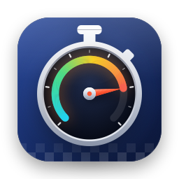

LLMRally
LLMRally benchmarks your local LLMs on your own Mac — measuring how fast they generate text and how well they answer across five categories of tasks. It connects to the inference server you already run (Ollama, LM Studio, MLX, llama.cpp and others), and every result stays on your machine.
Getting started
-
Install an inference server
LLMRally does not run models itself — it benchmarks the server you already run. The easiest starting point is Ollama (free, ollama.com):
brew install ollama ollama pull llama3.2:3b ollama serveAlso supported: LM Studio (enable the local server in the Developer tab), MLX-LM pip install mlx-lm, llama.cpp's llama-server, vLLM, Jan, KoboldCpp — or any server that speaks the OpenAI-compatible API.
-
Pick your model and run a rally
Open LLMRally and select your backend (the green dot means it's running). Click Load Models to fetch the list, pick a model, then hit Run Lite Rally. In about 3–5 minutes you'll see speed metrics (tokens per second, time to first token) and a quality score across five categories — shown as a capability radar.
-
Read your results
The capability radar shows where your model excels at a glance — each axis is one task category (knowledge, reasoning, instruction following, long-context recall and coding). Click a model in the Results sidebar for per-test detail, response replay, and run history with trend arrows. Run it again with a different quantization to see which trade-off works best for you.
How it works
Speed — measured live from the stream
LLMRally sends fixed prompts to your model and measures TTFT (time to first token — how long until text starts appearing) and tok/s (tokens per second — how fast text streams once started). Cold runs (when the model is freshly loaded) are marked and excluded from warm averages, so the numbers reflect real use — not the one-time load cost.
Quality — scored by code, not by opinion
Each quality test is a fixed prompt with a programmatically verifiable answer: math problems with exact numeric results, multiple-choice with the correct letter, instruction following ("use exactly three bullets", "don't mention X"), needle-in-a-haystack recall from long text, and code structure checks. No AI judges the output — a deterministic checker does. Speed and quality are never blended into one number, because a fast model isn't necessarily a good one.
The five axes
| Knowledge | Multiple-choice questions across topics. How well does the model know things? |
|---|---|
| Reasoning | Word problems with exactly one numeric answer. Can the model do the math? |
| Instruction following | Formatting constraints: bullet counts, word ranges, banned words, exact endings. Does the model listen? |
| Long-context recall | A key fact buried in a long "haystack" of context. Can the model find it? |
| Coding | Write a function to spec. Does its structure match the requirements? |
Deep Testing — one-time $9.99
The free tier runs forever, with no time limits. Deep Testing is a one-time unlock that makes the numbers more trustworthy and adds comparison tools.
| More test items | Free: 12 quality items across 5 axes. Deep: 90 items — 30 knowledge, 30 reasoning, 10 instruction, 8 long-context, 12 coding. |
|---|---|
| Repeats & confidence | Deep runs each speed stage 3 times and reports the median with a 95% confidence interval — so you know how stable the measurement is. |
| Arena head-to-head | Pick two models; run both through the same stages. See which one wins per category, with honest tie detection when results are within noise. |
| Export | Save any result as CSV (spreadsheet), JSON (full record), or a PNG radar card you can share. |
The price is a one-time payment — no subscription, no renewal. Restore Purchases works on any Mac signed into the same Apple Account.
FAQ
Why does LLMRally need an inference server?
LLMRally is a benchmarking tool — it measures how fast and how well your model runs, but it doesn't execute the model itself. Your inference server (Ollama, LM Studio, etc.) does the actual text generation; LLMRally sends prompts to it and times the responses. This is the same way you use the model in real life, so the numbers you get are the numbers you'd see in your own chat experience.
What does "Cold" mean next to a speed result?
Cold means the model was freshly loaded into memory when the test ran — the response time includes the one-time cost of loading the model. Warm means it was already loaded. Cold runs are marked with a badge and excluded from speed averages because they would understate your model's true performance during normal use.
What does "est. tokens" mean?
Some servers report exact token counts in their responses, and some don't. When the server doesn't report, LLMRally estimates the count from the stream (roughly one token per chunk). The "est." badge tells you when this happens — the numbers are close but may be off by a few tokens.
Why is my thinking model showing a separate "thinking at X ms" line?
Reasoning models (like DeepSeek R1 or Qwen3 with thinking enabled) generate invisible reasoning before they produce a visible answer. LLMRally tracks when the model starts thinking and reports it separately — so the visible answer speed isn't inflated by the hidden thinking phase. This is a feature, not a bug: you get the honest split.
Is my data private?
Yes, completely. LLMRally connects only to endpoints you configure (typically http://127.0.0.1:… on your own machine). It collects no analytics, has no crash reporting SDK, sends nothing to any external server, and has zero third-party dependencies. Your benchmark results are saved to your Mac's Application Support folder and never leave your device.
Which backends work with LLMRally?
Any server that speaks the OpenAI-compatible API:
- Ollama — auto-detected on port 11434
- LM Studio — enable local server in Developer tab (port 1234)
- MLX-LM — pip install mlx-lm, then mlx_lm.server
- llama.cpp — llama-server on port 8080
- vLLM — port 8000
- Jan — port 1337
- KoboldCpp — port 5001
- Any other OpenAI-compatible server — add it in Settings
The score seems low — is my model broken?
The quality score is pass/fail per item, averaged. A score of 30% means the model solved 30% of the test items — this may simply mean the model is small or heavily quantized. The more useful signal is the radar's shape: does one axis stand out? Compare two models (or the same model with different quantization) and focus on which categories differ, not the absolute number.
Can I run it without a server?
Yes — you can run LLMRally and browse its interface, but to see benchmark results you need at least one running inference server with a model loaded. The app shows actionable error messages when no backend is detected.
Troubleshooting
No backend detected / all gray dots
Check that your inference server is actually running: curl http://127.0.0.1:11434/v1/models should return a JSON list of models. If it doesn't, start the server first (ollama serve, or open LM Studio and click "Start Server" in the Developer tab). Then click Load Models in LLMRally.
"Model not found" error
The model you selected was removed from the server. Refresh the model list, and make sure the model is actually downloaded: ollama list or the equivalent in your backend. Then pick it from the dropdown again.
"The model does not fit in memory"
The model requires more memory than is available on your Mac. Try a smaller model or a more aggressive quantization (e.g. Q4 instead of Q8). You can check available memory via Activity Monitor → Memory.
Speed results vary between runs
Some variation is normal — your Mac's CPU/GPU load, thermal state and memory pressure affect inference speed. Run the rally twice after the machine has been idle for a few minutes and take the second result as your baseline. The "Cold" badge marks runs that include the one-time model load cost; those are always slower than warm runs.
Deep Testing (paid) runs each stage 3 times and reports the median with a 95% confidence interval — which tells you how stable the number is.
Quality score shows 0% but the model works fine in chat
The quality tests are strict: they check for exact numeric answers, specific letters, formatting constraints and exact phrases. A model that responds conversationally (adding "Sure! The answer is…" before the number) may still pass, but a heavily quantized model might genuinely fail all tests. Click any individual test item in the model detail view to see exactly what the model answered and why it passed or failed.